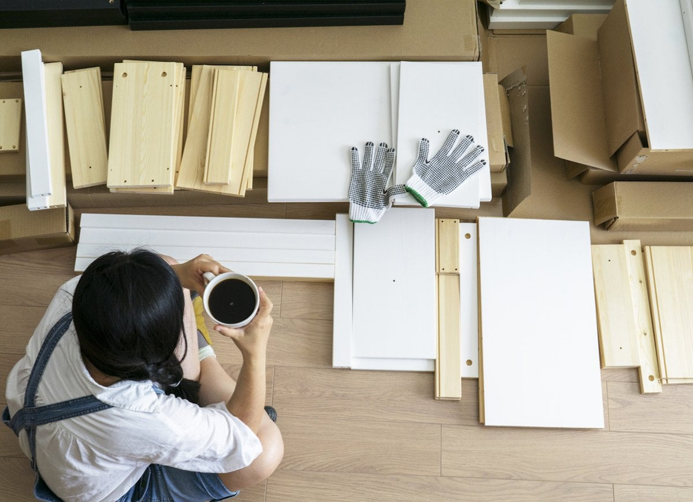
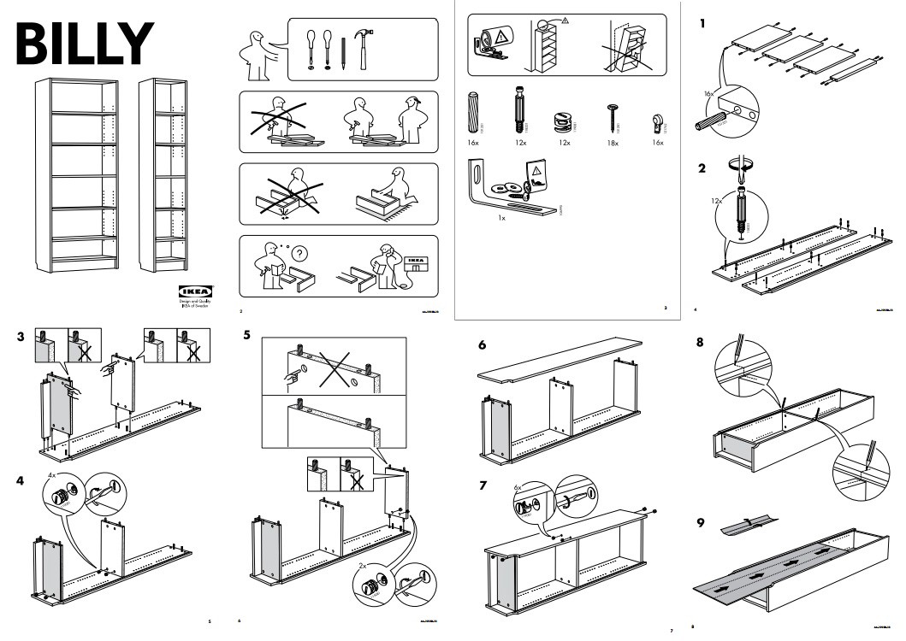
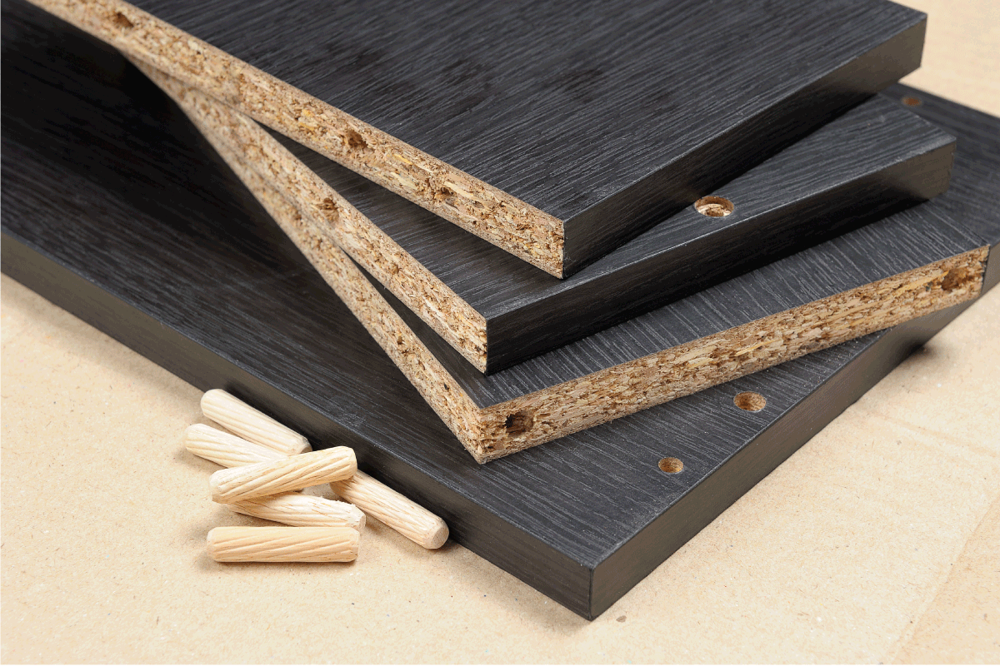
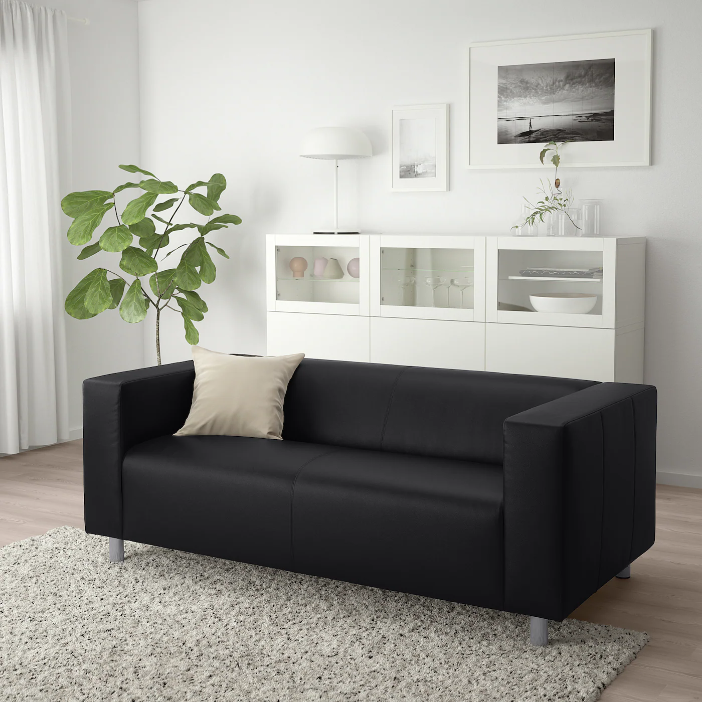

OFFERINGS
- 
IKEA Furniture Assembly
- 
IKEA Billy Assembly Instructions
- 
IKEA Medium-Density Fiberboard
- 
IKEA Klippan Sofa
Rather than being sold pre-assembled, much of IKEA's furniture is designed to be assembled by the customer. The company claims that this helps reduce costs and use of packaging by not shipping air; the volume of a bookcase, for example, is considerably less if it is shipped unassembled rather than assembled. This is also more practical for European customers using public transport, because flat packs can be more easily carried.
IKEA contends that it has been a pioneering force in sustainable approaches to mass consumer culture. Kamprad calls this "democratic design," meaning that the company applies an integrated approach to manufacturing and design (see also environmental design). In response to the explosion of human population and material expectations in the 20th and 21st centuries, the company implements economies of scale, capturing material streams and creating manufacturing processes that hold costs and resource use down, such as the extensive use of Medium-Density Fiberboard ("MDF"), also called "particle board".
Notable items of IKEA furniture include the Poäng armchair, the Billy bookcase and the Klippan sofa, all of which have sold by the tens of millions since the late 1970s.
IKEA products are identified by one-word (rarely two-word) names. Most of the names are Scandinavian in origin. Although there are some exceptions, most product names are based on a special naming system developed by IKEA. Company founder Kamprad was dyslexic and found that naming the furniture with proper names and words, rather than a product code, made the names easier to remember.
Some of IKEA's Swedish product names have amusing or unfortunate connotations in other languages, sometimes resulting in the names being withdrawn in certain countries. Notable examples for English include the "Jerker" computer desk (discontinued several years ago as of 2013), "Fukta" plant spray, "Fartfull" workbench, and "Lyckhem" (meaning bliss).